Real-Time Ambient Occlusion(AO) Summary
- why can calculate AO separately
- what is AO
- Precomputed Ambient Occlusion
- Dynamic Computation of Ambient Occlusion
- Screen-Space Methods
- Directional Occlusion
why can calculate AO separately
AO的核心思想是把visibility计算和lighting计算分开，降低render equation计算的复杂度。
assumptions
- incident indirect lighting is constant
- diffuse materials 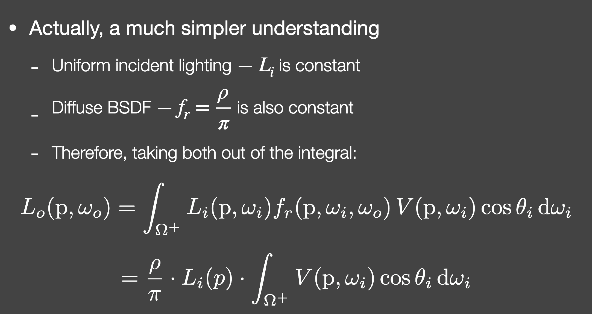
{kind=link}
deeper mind
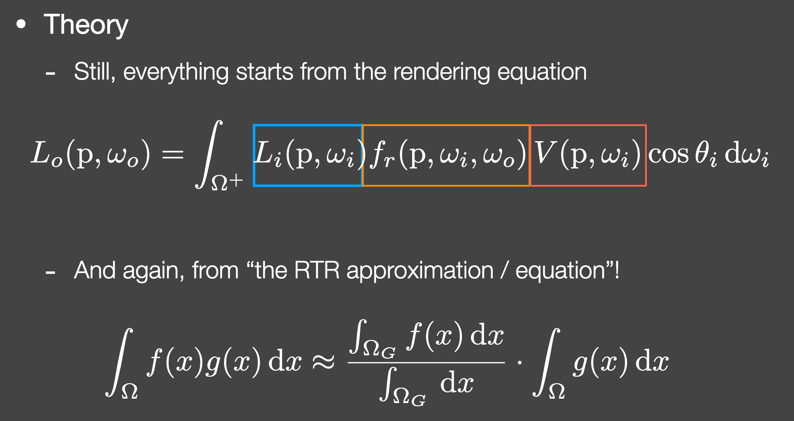 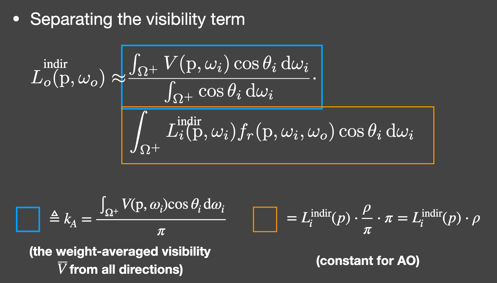 为什么把cos带上，实际是转换成在投影单位圆上的积分 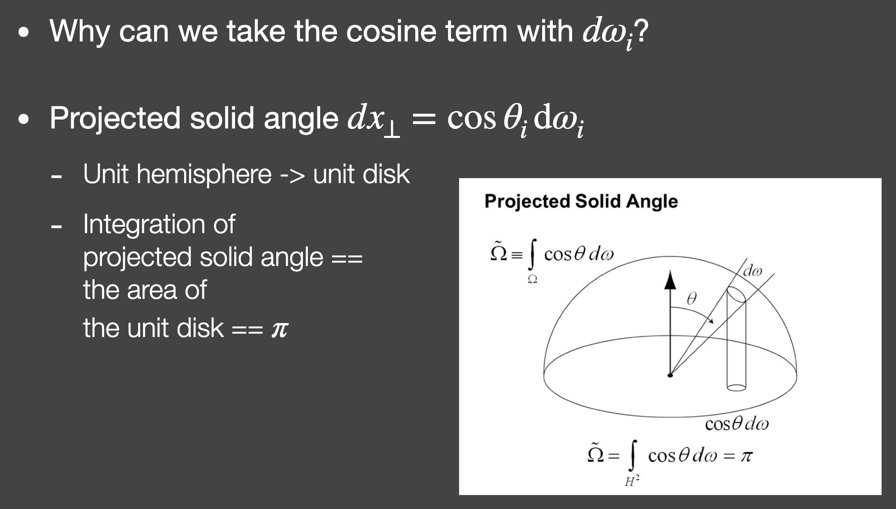
{kind=link}
{kind=link}
{kind=link}
what is AO
definition
- ambient occlusion a cosine-weighted percentage of the unoccluded hemisphere, 半球上的结合cos权重的归一化积分（因为带了cos所以归一化要除以 pi）。
- bent normal 考虑到遮挡关系，如果用a cosine-weighted average of unoccluded light directions作为shading的normal来使用，会得到更加准确的光照计算结果。 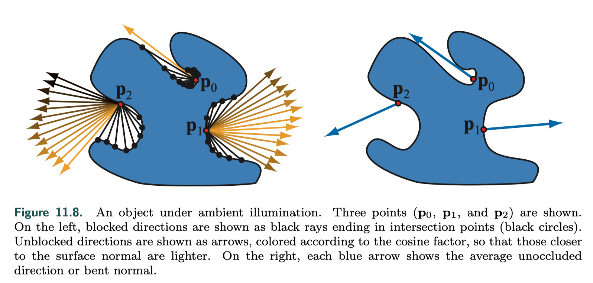
{kind=link}
{kind=link}
{kind=link}
visibility function
对于室外，室内等不同场景，visibility function的定义决定了AO的质量和性能。
- ambient obscurance The value of ρ (l) is 0 at an intersection distance of 0 and 1 for any intersection distance greater than a specified distance d_max , or when there is no intersection at all. 就是在某个方向0-d_max范围内对应vis函数的值从1到0过渡。 这个虽然不是physically correct, 但效果已经还不错了，因为限制了d_max，所以性能上也会好很多，但是d_max的值需要人为设定。
{kind=link}
interreflections
AO 和 GI 最大的一个不同就是考不考虑物体之间的相互反射。 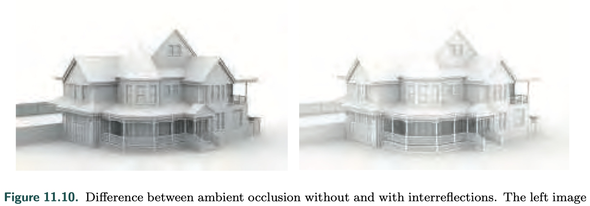 如果有遮蔽，vis = 0，那就忽略了occluder的reflection，使得有些地方过黑。
{kind=link}
- ambient obscurance 可以稍微缓解下这个问题
- 近似考虑interrelfections under diffuse illumination, the surface locations visible from a given location tend to have similar radiance.
- offline path tracing perform full, offline path tracing for a number of scenes, each lit by a uniformly white, infinitely distant environment map to obtain occlusion values. fit cubic polynomials to approximate the function f that maps from the ambient occlusion value k_A and subsurface albedo ρ_ss to the occlusion value k_A′, which is brightened by the interreflected light. 用三次多项式去拟合AO的函数。
{kind=link}
Precomputed Ambient Occlusion
基本的思想是基于RT, 适用于静态物。
sampling
{kind=link}
data storage
- ambient occlusion field model how the ambient occlusion value changes with distance from the object with a reciprocal of a quadratic polynomial and its coefficients are stored in a cube map.
- ambient occlusion volume 三维贴图，存储ambient occlusion factors, and optionally the bent normal.
large-scale AO
a top-down view and process the resulting depth map to compute large-scale occlusion. 根据neighboring depth samples来计算AO.
Dynamic Computation of Ambient Occlusion
动态物的AO没办法实时用RT的方法去做，需要做一些简化来更快的近似计算出来。
简化模型
- modeling the surface as a collection of disk-shaped elements placed at the mesh vertices 之所以选择disk，是因为disk之间的遮挡关系计算是可控的。
- approximate the occluding geometry as a collection of spheres 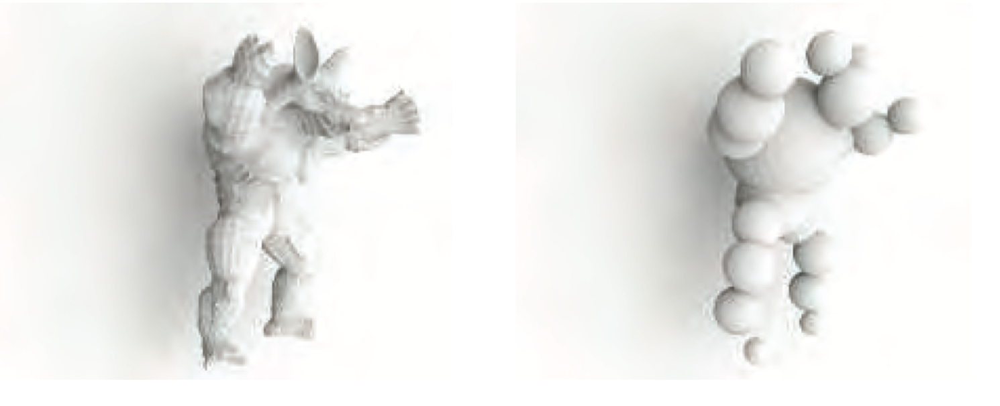 个人感觉这两个方法商用起来都有点费劲，还不如直接拿静态物的occluder来用。
{kind=link}
SDF and cone tracing
{kind=link}
- 最终的occlusion factor = cone tracing过程中的最小立体角 / cone tracing的最初立体角
- a set of cones, covering the entire hemisphere
- global SDF & local SDF
voxel based
voxel GI 的时候顺带做。
screen space accumulation
对于每个object, 给出一个occlusion影响范围，在这个范围内计算物体对每个像素的occlusion影响，转换成 a proper spherical harmonic value is added to an offscreen buffer. After accumulating visibility for all the occluders, the values in the buffer are exponentiated to get the final.
Screen-Space Methods
screen-space ambient occlusion (SSAO)
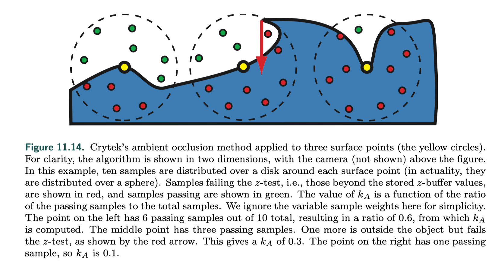 如果已知normal，可以在半球上做结果更准确。 原算法忽略了cos项，觉得可以以cos的概率去随机选取采样点。
{kind=link}
volumetric based
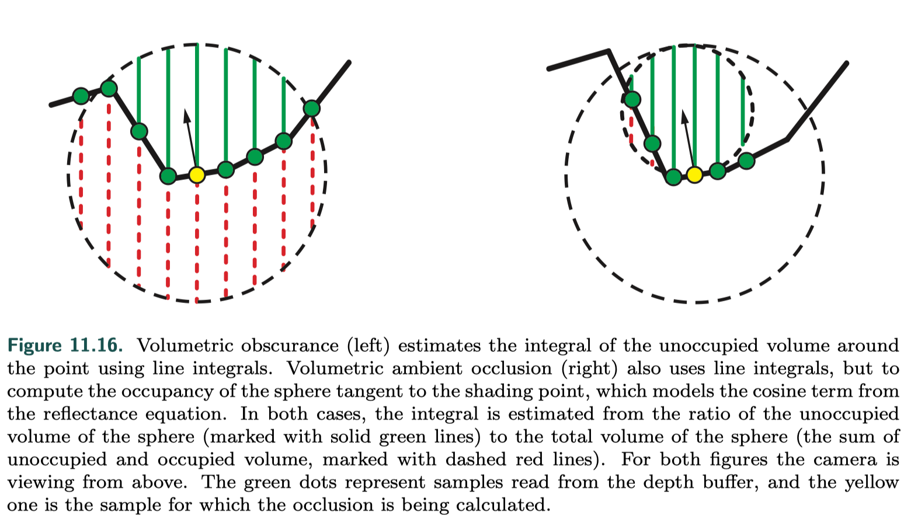 where X is a three-dimensional, spherical neighborhood around the point, 考虑周围三维空间的遮挡关系，利用三维的遮挡体积比例关系计算occlusion factor.
{kind=link}
{kind=link}
horizon-based ambient occlusion (HBAO)
基于的假设是，the data in the z-buffer represents a continuous heightfield, 连续了才能用角度近似。
{kind=link}
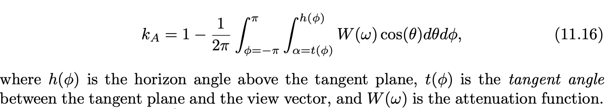 本质上是用未被遮挡的立体角除以整个半球的立体角作为occlusion factor.
{kind=link}
{kind=link}
- W这个attenuation function可以是基于距离的衰减函数。
- t这个角度是该点的切平面和视线的切平面的夹角，那个黑色箭头是视线方向。
- 至于积分可以转换为离散采样等处理之后详细的再说说。 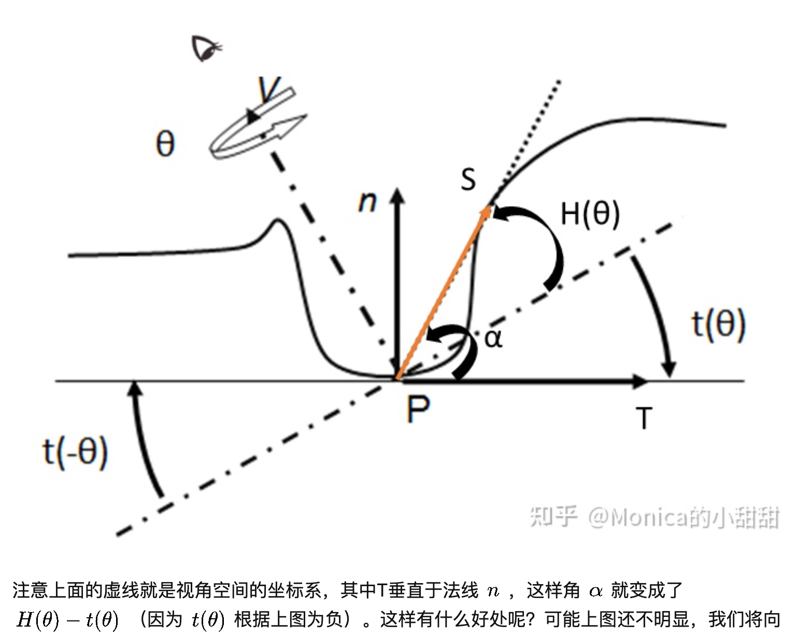
{kind=link}
ground-truth ambient occlusion (GTAO)
为什么敢号称ground-truth HBAO忽略了(n dot L)项，并且还加了一项ad hoc attenuation. GTAO introduces the missing cosine factor, removes the attenuation function, and formulates the occlusion integral in the reference frame around the view vector.
basic theory
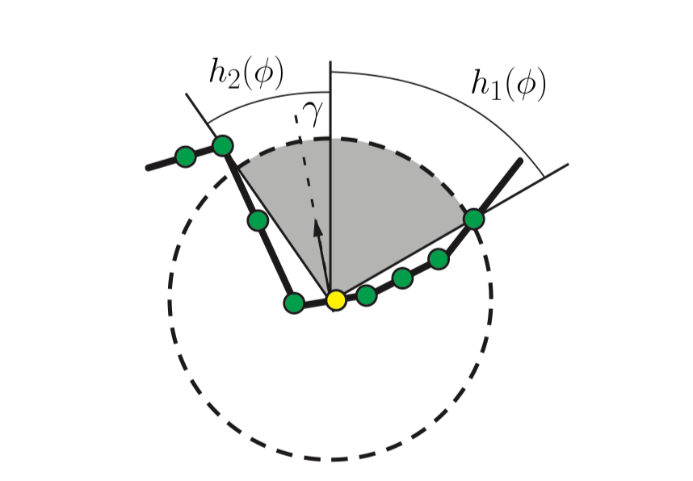
{kind=link}
{kind=link}
Directional Occlusion
AO不适用的场景
会议下AO做的假设，就可以看出，AO不适用于
- large area light & punctual light
- glossy BRDF
Solutions
非平行光
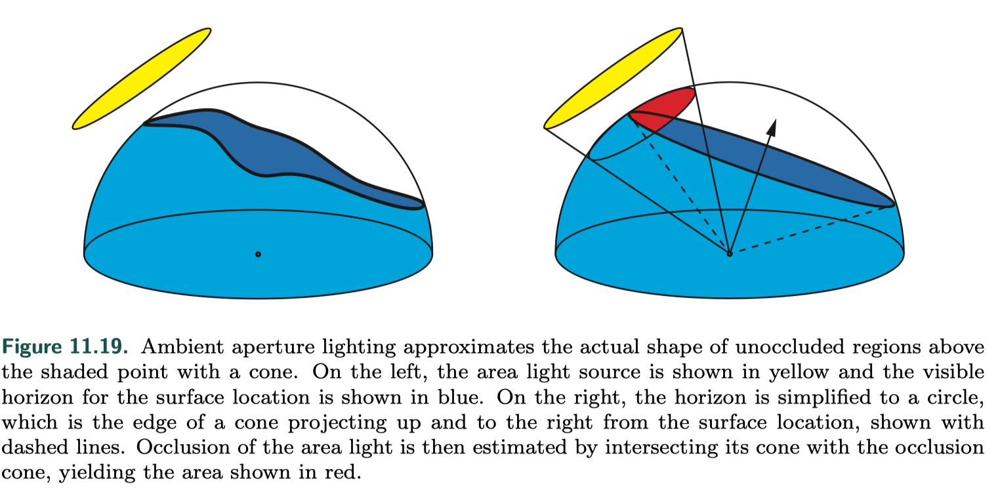 light cone 和 visibility cone 求交
{kind=link}
{kind=link}
glossy BRDF
the approximate BRDF is defined as a sum of spherical Gaussians assume that the visibility function is constant across the entire support of each spherical Gaussian 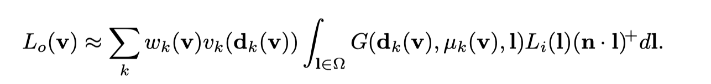
{kind=link}
{kind=link}
screen space directional occlusion (SSDO)
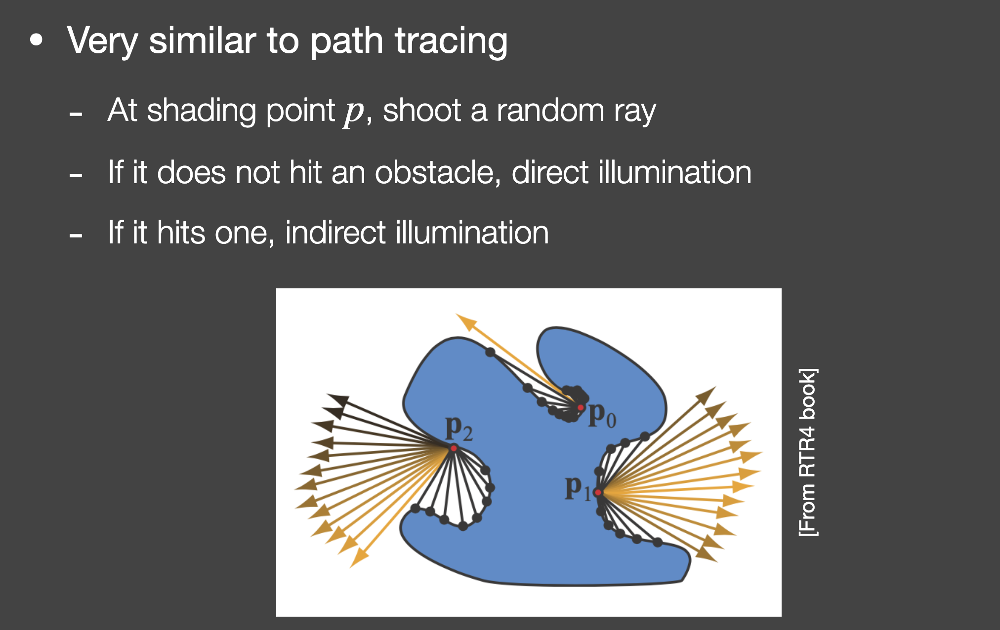 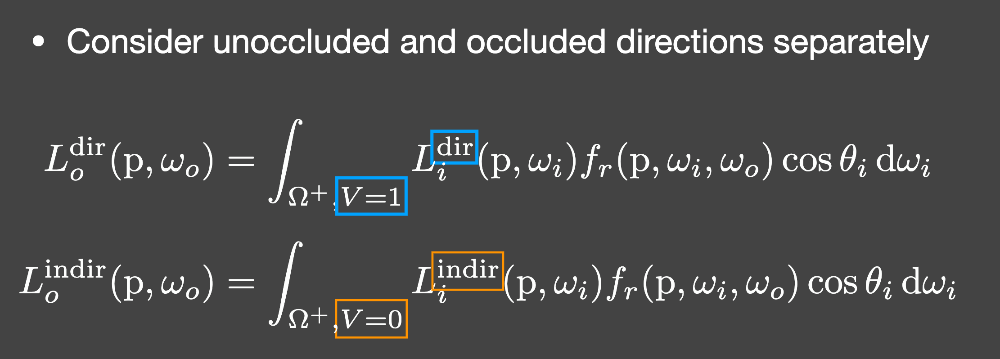 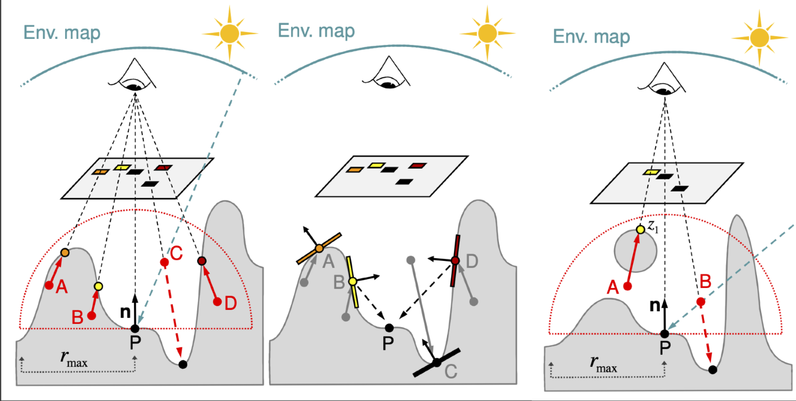 采样各个点，如果遮蔽，计算遮蔽处的间接光照。 这样想的话 不是 AO * direct_lighting + DO 才是最终的光照结果。
{kind=link}
{kind=link}
{kind=link}